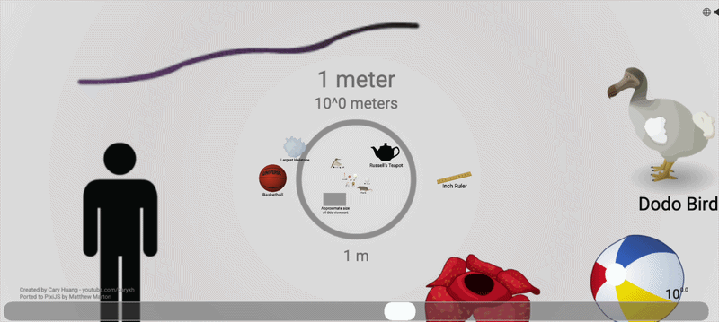
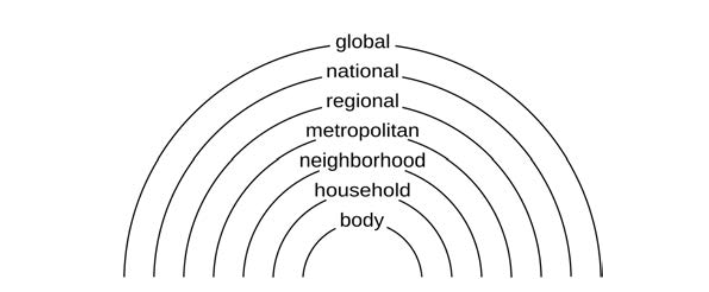

Concepts of Scale
In the previous lesson, we focused on how geographic knowledge is represented and how maps support inference. This week, we move one step further in the process of geographical analysis: from representation to analysis. Once data are represented, what most people identify as analysis begins. Analysis is not simply a technical step, but a series of choices that structure how spatial patterns and processes are detected, compared, and interpreted. Among the earliest and most fundamental of these analytical decisions are those related to scale.
Scale affects analysis at every stage of geographic work, yet its importance is often overlooked. In many cases, the effects of scale are subtle. For example, the selections, simplifications, and omissions embedded in a dataset, arising from the scale at which data are collected and compiled, may pass unnoticed. However, this does not mean that those decisions are inconsequential. On the contrary, these choices quietly shape the structure of the data and, in turn, the outcomes of analysis. At other times, the effects of scale are highly visible. Patterns may appear or disappear, relationships may strengthen or weaken, and different features may come into or fall out of focus as data are aggregated, manipulated, or visualized at different scales. These shifts reflect fundamentally different ways of seeing and interpreting geographic phenomena. Consequently, the role of scale in geospatial research cannot be reduced to a matter of methodological convenience. Instead, scale, as a core concept in GIScience, is deeply intertwined with foundational ideas such as space, location, and spatial relationships. Developing an awareness of scale is therefore essential to building a more reflective and rigorous approach to geographic analysis.
In this lesson, we explore the complexities of scale from two complementary perspectives. First, we examine scale as a theoretical concept in geography, considering how it has been defined, classified, and debated. Second, we turn to scale as a practical concern in GIScience and cartography, focusing on how decisions about scale influence data, analysis, and visualization in research practice.
Scale as Size
To begin, it is helpful to think about scale in its most intuitive sense: scale as size. In this view, scale refers to the magnitude or extent of phenomena, ranging from the very small to the very large. The universe itself is organized across an immense range of scales from microscopic particles to planetary and cosmic systems (Figure 1).
Recognizing this vast range helps put into perspective geographers’ frequent tendency to speak authoritatively about “scale.” In practice, no single study can engage with all this complexity. Instead, researchers typically restrict their focus to a more manageable range, often examining phenomena that span three or four orders of magnitude: a thousand to ten-thousand-fold difference in size. This bounded perspective is not a limitation, but a necessary condition for meaningful analysis.

Figure 1: The universe is organized across an immense range of scales, from the very small to the very large. Click for original source
Scale as Hierarchy
Beyond size, scale is also commonly understood as hierarchy (Figure 2), which is an ordered arrangement of levels such as local, regional, national, and global. It is important to recognize that hierarchical scales are often not naturally set. Rather, hierarchical scales are often constructed through particular observational practices and analytical methods, and are applied within specific contexts. To the extent possible, data collection and analytical approaches should align with the spatial (and temporal) scales relevant to the phenomena under study. However, even when observational and process scales are aligned, scale remains relational. Hierarchical scale is relational in the sense that it reflects not only the inherent properties of the phenomenon, but also the tools, methods, and perspectives through which it is investigated.

Figure 2: An example of how a series of qualitative scales might be considered nested one within another.
Hierarchical scales are also often more conceptually-based than strictly size-based. The categories we use, such as city, region, or nation, do not always correspond neatly to differences in physical extent. For example, according to O’ Sullivan, a region like California or the U.S. Midwest may be larger than entire countries such as Ireland or New Zealand. Similarly, major metropolitan areas like Tokyo, New York, or London can exceed some nations in terms of population, economic activity, or spatial footprint. These examples illustrate that scale hierarchies are not fixed or universally ordered but depend on how we define and measure them.
Even when conceptual hierarchies and reality are misaligned, thinking in terms of scale hierarchies remains analytically useful. It allows researchers to focus on a particular level of interest while temporarily setting aside processes operating at other scales. For example, O’Sullivan notes how it might be reasonable in a study of statewide changes in the California public school system to hold out both fine-scale variations among individual schools and broader influences from national or global policy contexts to build a partial, but useful understanding of that educational system. In this way, scale serves as a practical tool for bounding analysis and structuring inquiry, even if the boundaries themselves are imperfect.
{kind=link}
{kind=link}
Figure 3: Another example of how thinking in terms of hierarchy is helpful is in public health research. In this case, disease patterns are often analyzed at multiple scales, such as neighborhoods, cities, or regions. For instance, a study of COVID-19 transmission might focus on county-level variation to understand regional disparities, while temporarily setting aside individual-level behavior or global mobility patterns. Although these processes interact, organizing the analysis hierarchically allows researchers to isolate patterns that are most relevant at a particular level of intervention. The two examples here illustrate this clearly. The study on the left focuses on the city/regional scale, identifying local disparities in access to medical resources during disease outbreaks to inform policy decisions. In contrast, the study on the right examines disease incidence at the national scale using county-level data to reveal broader patterns of social inequality across the United States, ultimately to also inform policy decisions. While both address the same phenomenon, they highlight different processes and support different types of decisions depending on the scale of analysis.
This way of organizing analysis falls under what is often referred to as hierarchy theory. Hierarchically structured systems are common across both natural and human domains because they enable levels of complexity that would otherwise be difficult to sustain, evolve, or manage. By organizing systems into levels, hierarchy provides a way to make sense of complexity without needing to account for everything at once.
A defining feature of hierarchical systems is whether or not they are decomposable. Whether system can be decomposed is partly related to whether that system can be understood as a set of independent subsystems, each of which can be further broken down into smaller sub-systems at still lower levels. If the system can be separated into sub-systems that can be largely understood independent other levels it is decomposable. However, in many systems cross-level interactions are very important, and so may systems are not compeltely decomposable. For example, a city can be seen as composed of neighborhoods, which in turn consist of individual households, while the city itself is part of a broader regional or national system. Crucially, interactions within a given level of the hierarchy tend to be stronger than interactions across levels, but still depend on relationships with other levels. Conversly, interactions between subsystems at the same level are typically weaker than the internal dynamics within each subsystem.
While it can be useful to think in terms of neatly nested hierarchies of scales and associated processes, it is important to recognize that such hierarchies are not entirely inherent features of the world itself. Rather, they are also analytical frameworks imposed by researchers to organize complex phenomena from particular perspectives, whether economic, social, cultural, political, biological, hydrological, ecological, or climatological.
The limitations of these hierarchical schemes become especially apparent when we attempt to examine interactions across multiple domains, which is prevalent across geography. Compared to many natural systems, which may exhibit clearer structural organization, social systems tend to be more fluid, overlapping, and less neatly decomposable. Social processes are not always anchored to well-defined spatial units, and their boundaries are often ambiguous or shifting. For example, economic networks, migration flows, or cultural influences frequently extend across local, regional, and global scales at the same time, resisting simple hierarchical categorization
{kind=link}
Figure 4: A classic example that illustrates the limitations of hierarchical thinking is Minard’s Napoleon Map. The map represents the movement of Napoleon’s army as a continuous flow across space that integrates multiple dimensions including geography, troop size, time, and temperature. The phenomenon cannot be meaningfully decomposed into a single scale of analysis—instead because it emerges through interactions across scales and domains simultaneously.
This challenge is also reiterated by Spielman, who reframes the scale problem in terms of decomposability. Drawing a contrast to the common conflation of scale with the modifiable areal unit problem, Spielman argues that the challenge of selecting an appropriate scale is not simply a statistical problem. In systems that are decomposable, it is possible to divide those systems into relatively independent parts, making it easier to identify appropriate units of analysis. However, many of the systems of interest in geography are not easily decomposable. Social and spatial processes often overlap and interact across multiple scales, resisting clear separation into distinct levels. If the system itself cannot be cleanly partitioned, then no single spatial unit can fully capture the processes at work. As Spielman argues, this complicates inference and suggests that scale selection must be understood as a conceptual and theoretical decision, rather than something that can be resolved through model fit alone1.
A classic example of the limitations of strict hierarchical thinking comes from Christopher Alexander’s argument that “a city is not a tree.” More specifically, Alexander argues that many of the failings of mid-20th century urban planning can be traced to reorganizing urban space into functionally distinct areas (residential, commercial, industrial) forcing decomposition onto city spaces in ways that prevent such cities from becoming vibrant urban places.
{kind=link}
Figure 5: The Philadelphia zoning map from 1962 shown here exemplifies this logic: the city is divided into clearly bounded, mutually exclusive zones arranged in a structured, almost hierarchical grid.
Scale as Socially Constructed
Beyond thinking of scale as size or hierarchy, an important perspective in human geography is that scale is socially constructed. The idea is that scale, like space, is not given in advance, but are produced through social processes. From this view, what we identify as a particular “scale” is itself an outcome of the very processes we seek to study. For example, the “urban” scale can be understood not simply as a fixed level between local and regional, but as something defined in practice through everyday social and economic activities, such as the reproduction of labor and commuting patterns.
This idea is developed in the work of Peter J. Taylor, who conceptualizes scale in terms of different domains of social life. In his framework, the global scale is associated with the organization of the world economy (the scale of “reality”), the national scale with political ideology and governance, and the urban scale with everyday lived experience. Importantly, Taylor emphasizes that these scales are tied to power, and the way processes operate across them has real material consequences. The key takeaway is that scales of analysis are themselves produced through social, economic, and political processes.
Debates about Scale
Despite the central role of scale in geography, it has also been the subject of significant debate. One of the most provocative critiques comes from Marston et al. (2005) who argue for a human geography “without scale.” While the title suggests a rejection of scale altogether, the authors’ primary concern is with hierarchical and pre-given notions of scale.
Marston et al. proposed a flat ontology, in which all entities exist on equal footing. In this view, processes at one level do not inherently control or dictate those at another. Rather than beginning analysis with predefined scalar categories, researchers are encouraged to focus on specific interactions among people, objects, and processes, and to allow patterns of organization to emerge from these relationships.
Importantly, this perspective does not deny the existence of scale or scalar effects, but it cautions against assuming a fixed, universal hierarchy. Building on this debate, MacKinnon (2011) argues for a more balanced position. On one hand, he critiques the tendency to treat certain scalar levels as fixed and natural. On the other hand, he also challenges the idea that scale can be entirely dismissed. In practice, many social and spatial processes do exhibit persistence at recognizable spatial scales, even as they are continuously produced and reshaped.
Reference:
O’Sullivan, D. (2024). Scale and Projection. In Computing geographically: Bridging GIScience and geography (pp. 45–74). Guilford Publications.
O’Sullivan, D. (2024). Lines and Areas. In Computing geographically: Bridging GIScience and geography (pp. 131–138). Guilford Publications.
Spielman, S. (n.d.). Scale and the decomposability problem.